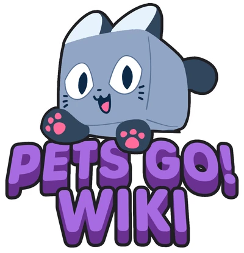

Welcome to the PETS GO Wiki!
PETS GO! is the first spin-off experience in the Pet Simulator series created by BIG Games™.
The PETS GO Wiki is a collaborative platform where players alike can help provide and get information on PETS GO. The wiki depends on the community to help it thrive. Feel free to add some information to a page, fix a spelling error, or even create an entirely new page!
The Kartoshka228332 Team is here to offer help you when you need it, so leave a message on their wall if you need something.